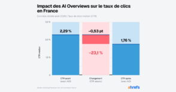

23 % de taux de clic en moins : les AI Overviews font déjà des dégâts en France

🛒 En lien avec cet article
Publicité — Liens de partenariat Amazon : une commission peut être reversée, sans surcoût pour vous.
🔥 Top produits tech du moment
Publicité — Liens de partenariat Amazon : une commission peut être reversée, sans surcoût pour vous.
L'intelligence artificielle continue de transformer en profondeur notre quotidien et l'économie. Cette annonce s'inscrit dans une dynamique où les grands acteurs accélèrent leurs investissements et leurs lancements.
Ce qu'il faut retenir
Ahrefs a comparé les données Search Console de 963 domaines français depuis le déploiement du 22 juillet.
Les sites, dont plus d'une requête sur cinq déclenche un résumé IA, décrochent nettement.
Pourquoi c'est important
Cette information marque une nouvelle étape dans le développement de l'intelligence artificielle. Elle concerne directement les utilisateurs de technologies numériques et mérite d'être suivie de près dans les prochaines semaines. 23 % de taux de clic en moins : les AI Overviews font déjà des dégâts en France est ainsi un signal à prendre en compte pour comprendre les évolutions du secteur.
En résumé
Retenez l'essentiel : 23 % de taux de clic en moins : les AI Overviews font déjà des dégâts en France. Cette actualité a été rapportée par BDM Tech. Nous continuerons de suivre ce sujet et de vous tenir informés des prochaines évolutions.
Source : BDM Tech